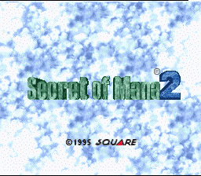

| 1. | Principal |
| 2. | Cajas y Manuales SNES |
| 3. | Proyectos |
| 4. | Documentación |
| 5. | Utilidades |
| 6. | Enlaces |
SECRET OF MANA 2 (SEIKEN DENSETSU 3) al 100.3%
Como todos los que seguís habitualmente la página sabréis, este juego fue uno de los grandes retos que me impulsaron a entrar en el mundo del romhacking. Durante el proceso de traducción al inglés, seguí casi día a día la página de Neil Corlett para estar al tanto de los posibles progresos y poder jugar a este GRANDIOSO juego en inglés, y así quizá algún día podría traducirlo al castellano. Sin embargo, los conocimientos necesarios para descomprimir el script y volverlo a comprimir, así como analizar las rutinas en ensamblador para poder modificar otras muchas cosas. Pero a mediados de 2004 comencé a destripar el código del Seiken Densetsu 3 y a analizarlo en conciencia gracias a la experiencia que había adquirido con Tales of Phantasia (ya que ambos usan una capa de compresión Huffman), con lo que conseguí descifrar el algoritmo completo de descompresión. Ya que en aquel momento todos mis esfuerzos se centraban en este último, fui dejando de lado lo que tenía avanzado de SD3.
Fue a principios de este año cuando de un feliz encuentro con Jonas, que se había estado encargando del proyecto durante mucho tiempo, salió una colaboración para que yo ayudara en la inserción del script en el juego simplemente realizando una descripción completa del algoritmo de descompresión (que ya había tenido más o menos hecha algún tiempo anterior). Lo que había comenzado como una colaboración sin importancia acabó convirtiéndose en una dedicación plena y total en este juego en el que tenía puesto yo tantas espectativas, ya que no había manera de insertar el script tan genialmente traducido por Vegetal Gibber en la ROM. ASí comencé a desarrollar a mediados de Julio una serie de algoritmos de compresión para texto que iban acercándonos a la solución final, hasta que por fin decidí adoptar el mismo algoritmo que Neil ya había usado en el juego, obteniendo el resultado esperado: ¡¡POR FIN A PRINCIPIOS DE OCTUBRE DE 2005 EL SCRIPT YA CABÍA EN EL ESPACIO LIBRE DE LA ROM!!
Quiero agradecer desde aquí a Jonas el haber mantenido vivo este proyecto tanto tiempo con su esfuerzo y carisma y por haberme dado la oportunidad de realizar lo que yo siempre había querido, destripar el código del juego para traducirlo; y por supuesto, agradecer de la misma forma a Vegetal Gibber todo el apoyo prestado así como todo el enorme esfuerzo que ha puesto en traducir el script completo al castellano, además de estar siempre disponible y dispuesto a realizar todas las modificaciones que le pedía.
VERSIÓN 100.3% (o si lo preferís 1.03)
Esta versión corrige un par de errores tipográficos en dos ventanas de diálogo y un par de defectos visuales: el primero es la pantalla de inicio, que tiene un nuevo logo con el texto "SECRET OF MANA 2" mucho más definido y elegante (gracias a la insistencia de josete2k por que lo metiera), y el segundo es algo que me extraña nadie se haya quejado: los créditos del inicio salían partidos por la mitad por culpa de unas pruebas que estuve haciendo para la versión alemana.
Y por último una aclaración muy importante.
Este parche se ha de aplicar a dos versiones diferentes de la ROM (cada parche a cada ROM): en primer lugar, el parche etiquetado como JP se aplica a la versión JAPONESA de la ROM de Seiken Densetsu 3 en su versión NTSC y sin cabecera. Esta ROM válida tiene un checksum (CRC32) de 0x863ED0B8 y un tamaño final válido de 4.194.304 bytes. En segundo lugar, el parche etiquetado como EN se aplica a la ROM en inglés con el parche final (versión 1.01) de Neill Corlett. Esta ROM tiene como CRC32 0x7DBDE871 y un tamaño final de 4.194.304 bytes.
Si vuestra ROM no tiene ese tamaño, sino que tiene un tamaño de 4.194.816 bytes, quiere decir que tiene cabecera y que ha de ser eliminada antes de aplicar el parche. Esto se hace bajando la utilidad SNESTool, ejecutándola en vuestro ordenador y eligiendo la opción "Delete Header". En el navegador de la izquierda del programa observaréis que podéis desplazaros por las carpetas de vuestro disco duro en busca de la ROM y así seleccionarla con INTRO. Tras este proceso, la ROM ya estará lista para parchear.
SÓLO TENÉIS QUE DESCARGAR UNO DE LOS PARCHES, DEPENDIENDO DE LA ROM QUE TENGÁIS.
Si queréis ver el trailer, pulsad aquí.
|
 |
Letras Especiales: TODOS Porcentaje Completado: 100.3% Tamaño Parche: 220 Kbytes Fecha Parche: 23/03/2013 Parche EN: Secret of Mana 2 en Castellano |
Lo que ya está hecho:
- Localizada la rutina de descompresión de gráficos 4BPP.
- Localizada la rutina de descompresión de los gráficos para la introducción.
- Localizada y modificada la rutina de descompresión de texto.
- Creada una utilidad para comprimir el script y realizar todas las tareas de modificación de la ROM.
- Extraído, traducido e introducido el texto 8x8 para el nombre de las ciudades.
- Modificados los créditos para hacer sitio a toda la gente que ha participado en el proyecto.
- Modificados los gráficos 4BPP para el logo, los créditos y la ventana de menú.
- Modificada la disposición de elementos de la pantalla de inventario.
- Insertada la intro
- Modificados los gráficos de las posadas.
- Testeado al 100% el script, y varias veces en muchos de los casos.
- Añadido el parche para 3 jugadores.
Lo que queda por hacer:
- NADA